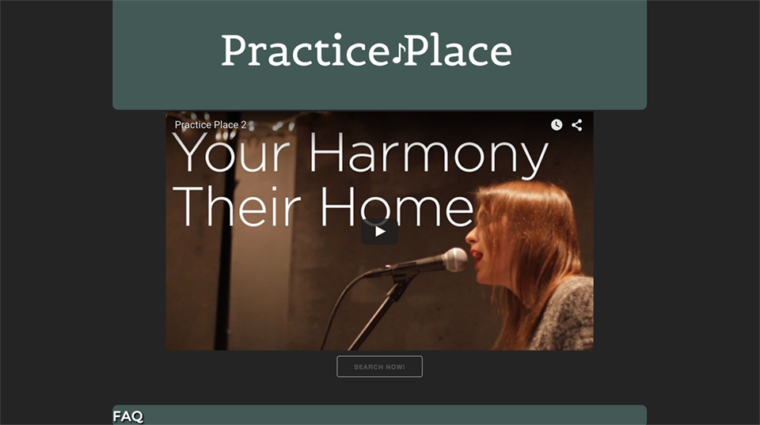

Hello!
My name is Zach Gordon. I am a front end developer with a video production background who lives in Seattle, Washington.

-

Learn More
-
Learn More
-
Learn More
Bio
I come from multiple creative backgrounds and have a wide range of education. Most recently, I received a certificate from Code Fellows in front-end development, where I built multiple web apps with advanced HTML, CSS, and JavaScript. I also have a BA in economics from the University of Washington, an education he used to help develop an inventory calculator for a nationally recognized pizza company.
I have also spent time in the video production industry as a cinematographer, editor, and production assistant, working with tools such as Adobe Primer Pro and working on major motion pictures such as, Worlds Greatest Dad and 21 & Over. I love to create media in all fashions and would love to create for you, so please reach out! And build something together.